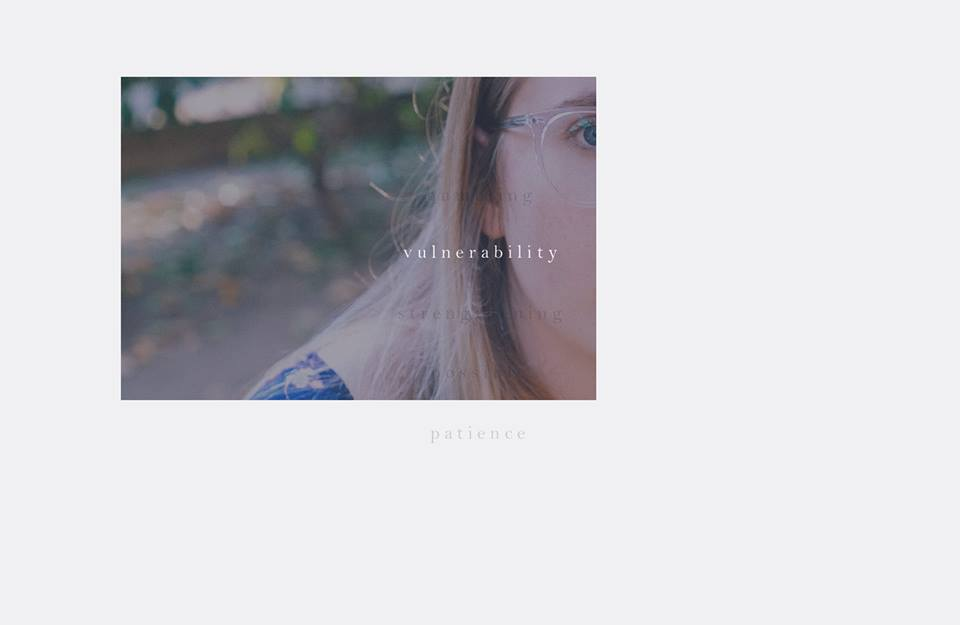
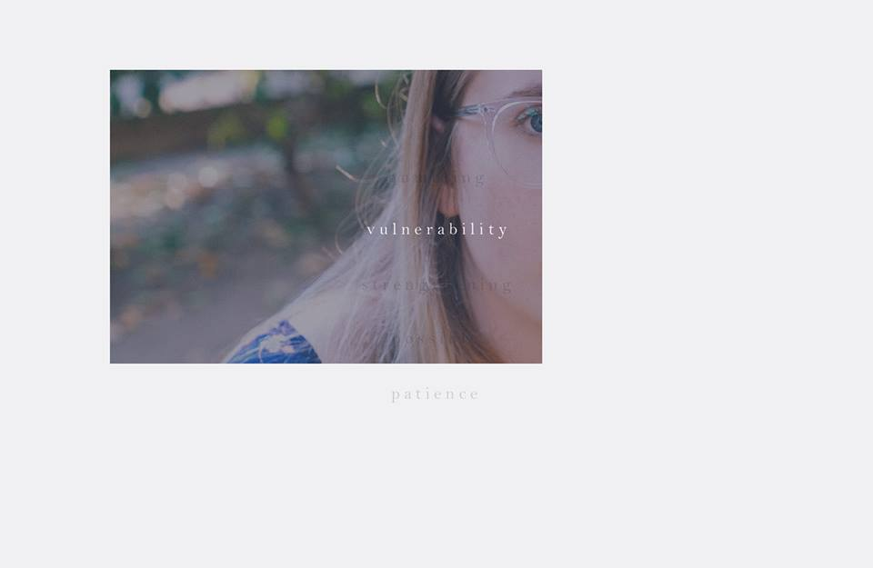

REFRAME.
WEB APPLICATION
 

A project developed to raise awareness about mental illness, and to share the stories of those who've struggled with it.
DESCRIPTION
Mental illnesses, such as depression, anxiety, and eating disorders are prevalent issues. However, mental illness often seems to remain a taboo in conversation and heavily misunderstood. Reframe was created by a group of students at UCLA with the vision of clearing up misconceptions regarding mental illness and encouraging open conversations about mental health on college campuses and beyond. Through different students’ stories, we hope to reframe mental illness in a more authentic and raw perspective, allowing people to understand ways to more appropriately face and respond to struggles in mental health.
My Creative Labs team and I developed this web application, which tells the story of a few people who have undergone this struggle. Each web page and its accompanying design choices are unique to each individual and their experience. This project allowed to me to hone my skills in not only CSS, but especially in JavaScript, which I used to create the effects for each page. Below are the features I've primarily worked on.
INTRO EXPERIENCE
FEATURES
- Display excerpts from seven individuals' stories
- Hover over faded text or use the sidebar to see and hear each person's account again
- Audio plays when each person's account is selected (unavailable in video demo)
- Random lines from the accounts fade in and out as time progresses

INDIVIDUAL PAGE: VALERIA
Valeria's story is one of disconnect. Her mental illness originates from sexual harassment, after which she began to feel disconnected from her friends, family, and body. In her page, we wanted to portray the lack of control she felt over her life and herself.
FEATURES
- Click on each image to see a part of Valeria's story
- When user moves mouse, the cursor's "shadow" bumps into and interferes with the text, scrambling the letters to highlight the disconnect between herself and the reality around her